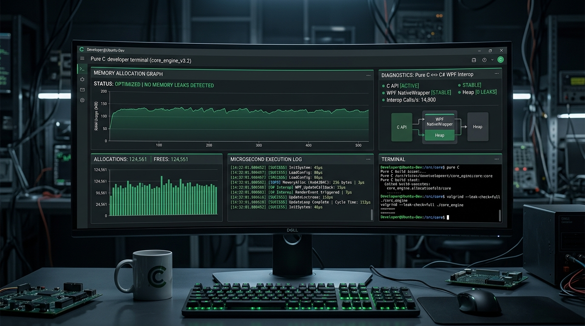
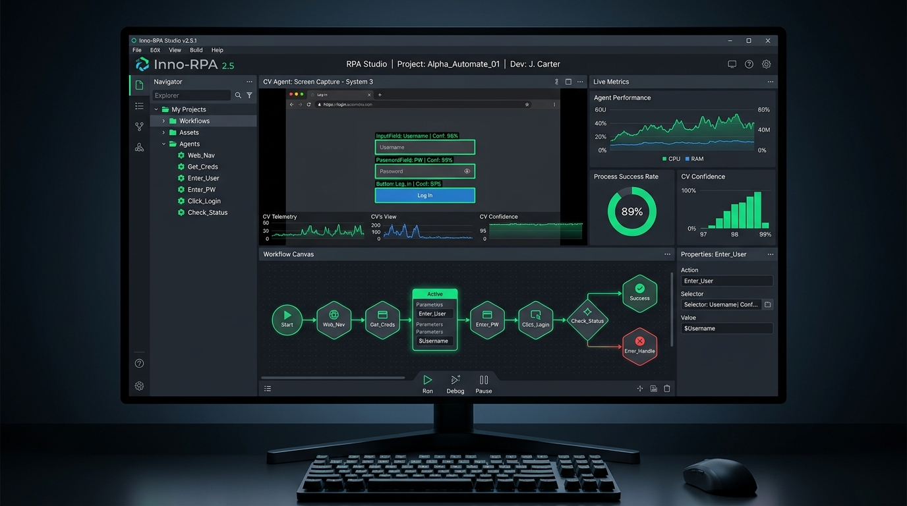

INNOVRPA: Motor Híbrido Zero-Leak de Automação e Visão
Engine robótica de alta concorrência desenvolvida para eliminar milhares de horas de trabalho manual em rotinas operacionais, unindo a velocidade bruta de ponteiros em Pure C à interface corporativa reativa em C# WPF .NET 8.
0.0 MB
Memory Leak
-75%
Tempo de Execução
60 FPS
OCR Screen Scan
100%
Async .NET 8

// O Desafio Técnico
Fragilidade e degradação de memória em ferramentas RPA tradicionais
Plataformas convencionais de automação consomem gigabytes de RAM em execuções contínuas de 24h, sofrendo com vazamentos de memória (*memory leaks*) e lentidão na detecção óptica de elementos dinâmicos na tela. Era imperativo construir um motor leve e ultrarrápido.
// A Solução de Engenharia
Arquitetura Híbrida em Duas Camadas
Desenvolvi um núcleo em Pure C responsável pelo rastreamento instantâneo de pixels, OCR e injeção de eventos Win32 de baixo nível com liberação determinística de buffers. Esse núcleo comunica-se via P/Invoke com um aplicativo desktop corporativo em C# WPF .NET 8, estruturado no padrão MVVM com injeção de dependência e cancelamento atômico via `CancellationToken`.


// Stack Tecnológica
// Destaques do Código
- ✓ 0 Leaks em 72h contínuas
- ✓ Rastreio em 16.6ms (60 FPS)
- ✓ Template Match 99.4%